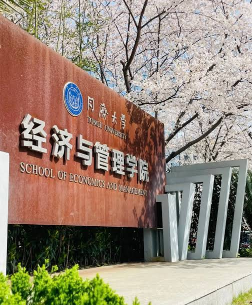

HSK4
ระดับมาตรฐานสำหรับการศึกษาต่อและทำงาน ระดับนี้เน้นความเข้าใจภาษาจีนในเชิงลึกขึ้น ผู้เรียนต้องสามารถอ่านและจับใจความสำคัญของบทความ ความยาวปานกลาง บทวิเคราะห์ หรือข่าวสารทั่วไปได้ ไวยากรณ์เน้นการเชื่อมโยงประโยคยาวๆ และการใช้สำนวนหรือคำสันทานที่เป็นทางการมากขึ้น นอกจากนี้ ข้อสอบจะเริ่มมีการสอบเขียนเรียงความสั้นๆ จากภาพถ่าย หรือการเรียงลำดับประโยคให้ถูกต้องตามหลักภาษา HSK 4 จึงเป็นระดับขั้นต่ำที่มหาวิทยาลัยในจีนส่วนใหญ่ใช้เป็นเกณฑ์รับนักศึกษาต่างชาติเข้าเรียนต่อระดับปริญญาตรี
รายละเอียดข้อสอบ: คะแนนเต็ม 300 คะแนน (ผ่านที่ 180 คะแนน)
การฟัง (45 ข้อ / 30 นาที): ฟังเรื่องเล่า บทสนทนายาว และเลือกคำตอบ (ฟังเพียงรอบเดียว)
การอ่าน (40 ข้อ / 40 นาที): อ่านบทความยาว เลือกคำตอบ และเติมคำในช่องว่าง
การเขียน (15 ข้อ / 25 นาที): เรียงประโยค และแต่งประโยคจากภาพที่กำหนดพร้อมใช้คำศัพท์ที่ให้มา
ไวยากรณ์สำคัญ: คำสันทานระดับสูง (不仅...而且..., 尽管, 竟然), การใช้สำนวนสุภาษิตพื้นฐานและโครงสร้างเน้นย้ำความ
การนำไปใช้: อภิปรายหัวข้อทั่วไป สมัครงานในบริษัทจีน และใช้ยื่นขอทุนเรียนต่อระดับ ปริญญาตรี (สาขาที่ไม่ใช่ภาษาจีนโดยตรง)

HSK 四级
留学与工作的标准等级。本等级注重对汉语的深入理解，学习者须具备阅读并理解中等长度文章、分析性文本或新闻通稿的能力。语法侧重于复杂长句的连接以及书面语连词的使用。此外，考试开始加入看图写短文和句子排序。HSK 四级也是大多数中国高校招收外国留学生本科入学的最低门槛。
考试详情： 满分 300 分（180 分合格）
听力（45 题 / 30 分钟）： 听叙述或长对话并选择答案
（仅播放一遍）。
阅读（40 题 / 40 分钟）： 阅读长文章选择答案及选词填空。
书写（15 题 / 25 分钟）： 连词成句及根据给定词汇和图片造句。
核心语法： 高级连词（不仅……而且……、尽管、竟然）、基础成语俗语及强调句型
实际应用： 讨论通用话题、应聘中资企业、申请本科奖学金（非中文专业）。